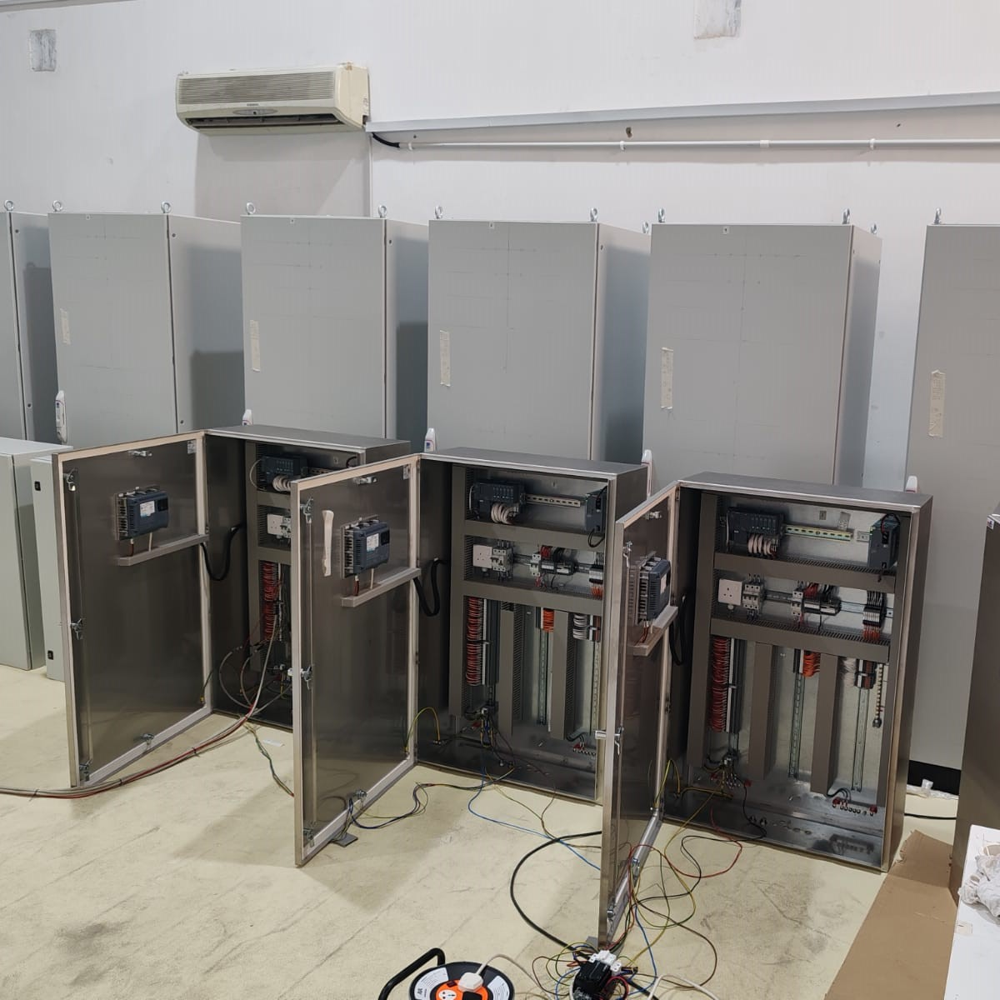
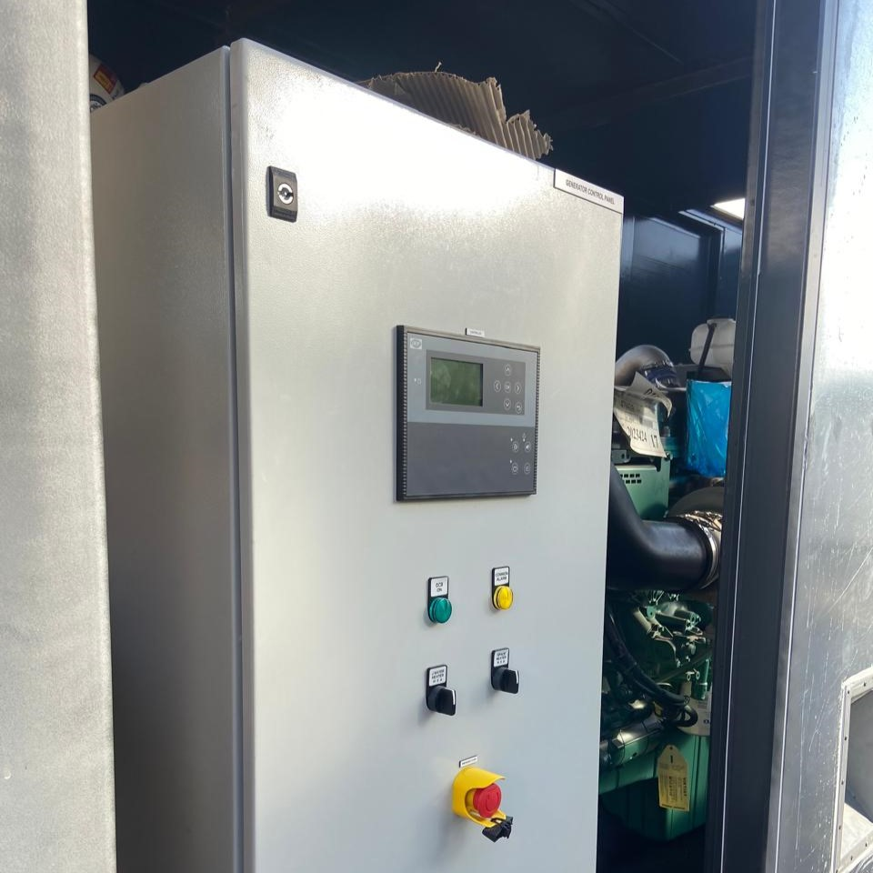
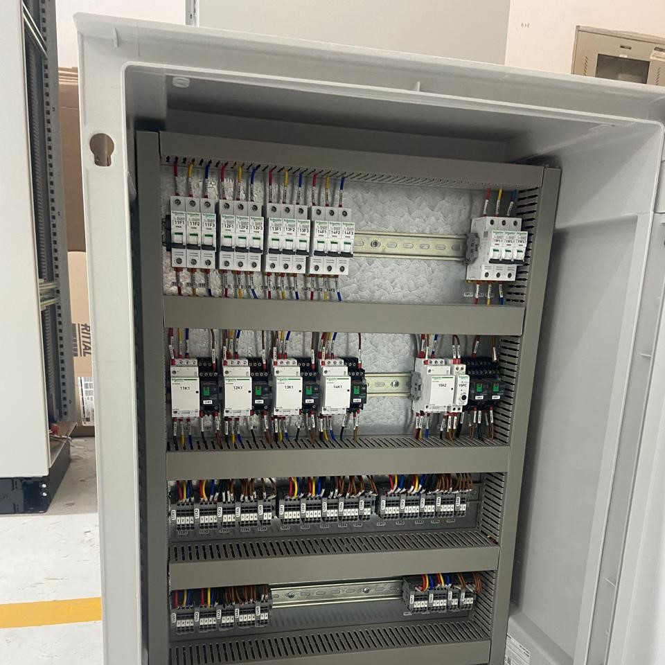
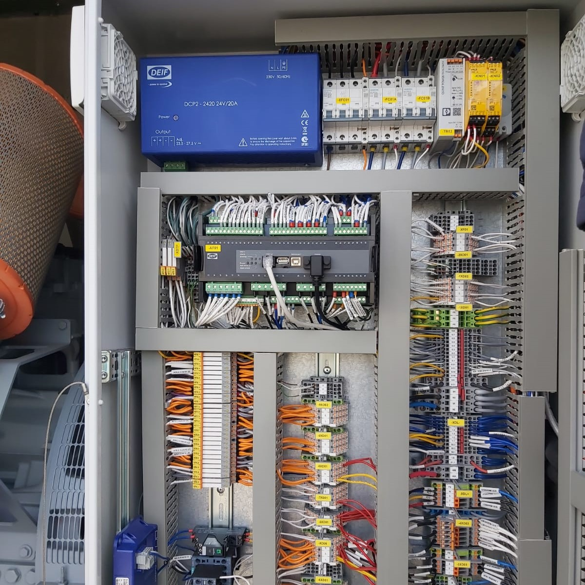
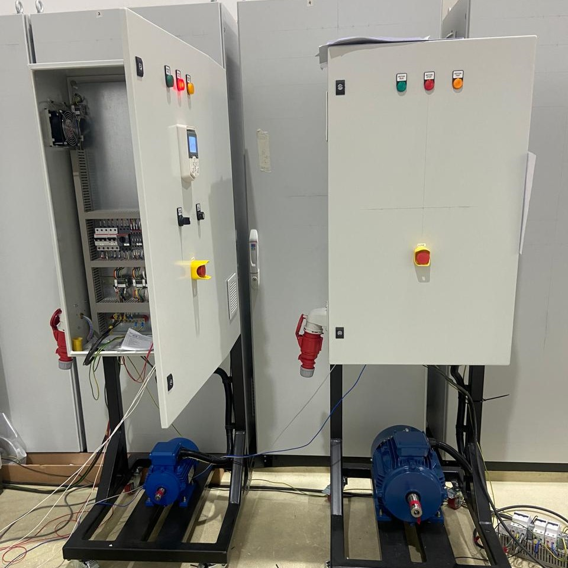
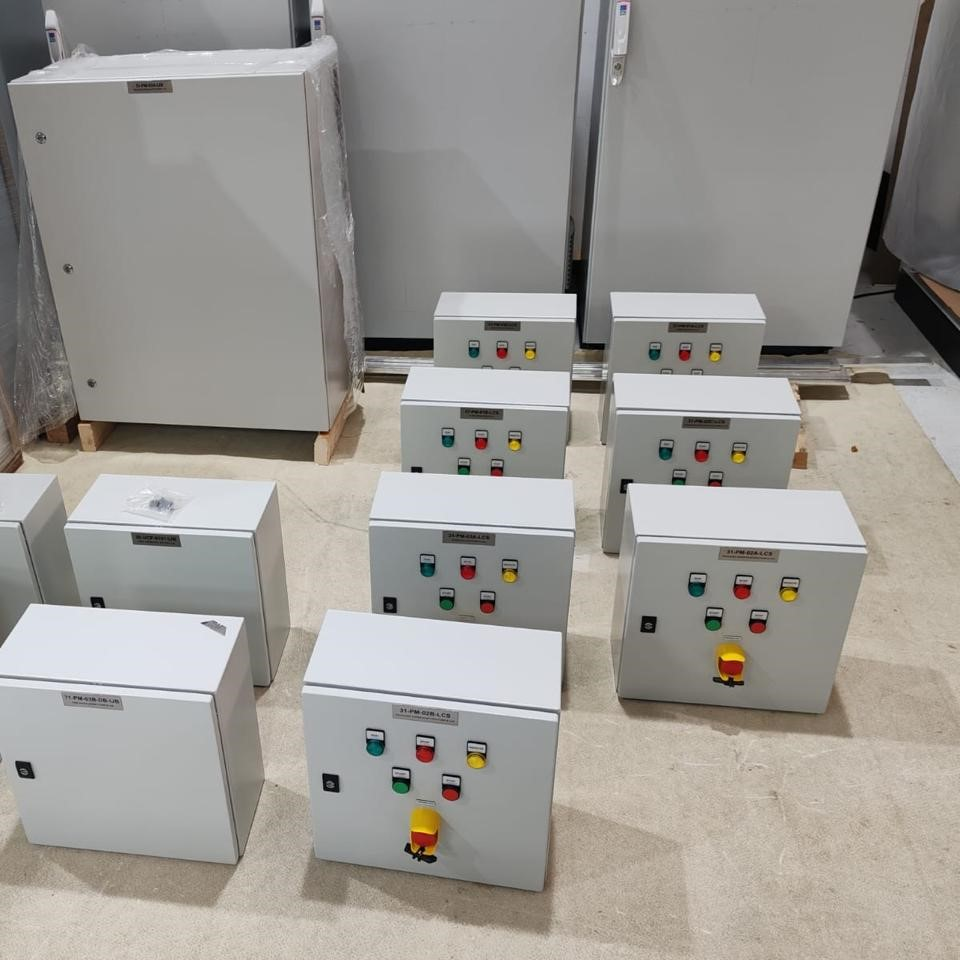
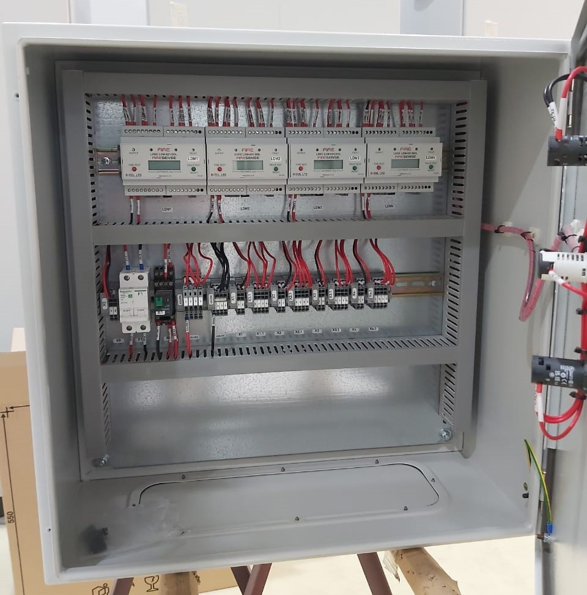
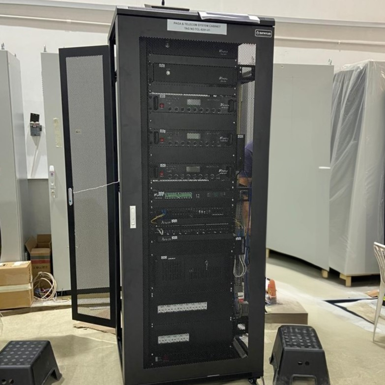

ATS Panels (Automatic Transfer Switch Panels)

Our ATS panels automatically switch between primary and secondary power sources during outages. These units are integrated with advanced controllers to ensure high-speed transition and protection for critical industrial loads.
Key Features:
- Automatic / Manual mode operation
- Fast transfer time
- AMF functionality
- Electrical & mechanical interlocking
- Remote monitoring capability
- Compatible with PLC / Controller-based systems
Auxiliary Distribution Panels (ADP)

Our ADPs provide reliable distribution for secondary electrical circuits across industrial facilities. They are built with robust circuit breakers and monitoring components to ensure stable performance and easy maintenance access.
Key Features:
- Modular design
- MCCB / MCB / ACB based configuration
- High short-circuit withstand capacity
- Copper / Aluminum busbar system
- Floor or wall-mounted options
Lighting Distribution Panels (LDP)

Our Lighting Distribution Panels offer centralized control and circuit protection for expansive indoor and outdoor lighting networks. These panels are tailored to manage high inrush currents and can be integrated with automation sensors for energy-efficient operation.
Key Features:
- MCB-based outgoing feeders
- Surge protection options
- Neutral & earth busbars
- Compact wall-mounted design
- IP-rated enclosures
Industrial Battery Chargers

Developed for demanding utility and substation environments, these chargers provide a stable DC power supply to maintain critical battery banks. They feature high-efficiency rectifiers and advanced diagnostic alarms to ensure 24/7 availability of backup systems.
Key Features:
- Float & boost charging modes
- Automatic voltage regulation
- Overcurrent & short-circuit protection
- DC output monitoring
- Suitable for Lead-Acid & Ni-Cd batteries
VFD Panels (Variable Frequency Drive Panels)

Our VFD panels provide precise speed and torque control for industrial motors, significantly reducing energy consumption and mechanical wear. Each cabinet is equipped with optimized cooling systems and harmonic filters to maintain peak performance in harsh operating conditions.
Key Features:
- Compatible with drives from Siemens, ABB, Schneider Electric
- Soft start / soft stop functionality
- Energy saving operation
- Overload & short-circuit protection
- Local / Remote control modes
- PLC integration
Interposing Relay Panels

Designed to isolate and protect sensitive PLC/DCS control circuits from high-voltage field signals, our interposing relay panels ensure clean signal transmission. These compact solutions facilitate easy troubleshooting and enhance the overall safety of the automation architecture.
Key Features:
- Signal isolation & amplification
- DIN rail mounted relays
- Terminal blocks with proper labeling
- 24VDC / 110VDC / 230VAC configurations
- Easy maintenance access
RTU Panels (Remote Terminal Unit Panels)
Our Remote Terminal Unit (RTU) panels are engineered for long-distance data acquisition and telemetry in infrastructure and utility sectors. They feature modular communication ports and ruggedized processors capable of operating reliably in isolated or extreme environments.
Key Features:
- PLC / RTU based architecture
- Communication protocols (Modbus, Ethernet, etc.)
- SCADA integration
- Industrial-grade components
- IP-rated enclosures for outdoor installation
Local Control Stations (LCS)

Built for on-site operation, these stations provide manual control and emergency stop functionality directly at the machine or field equipment. Available in various IP-rated enclosures, they are designed to withstand corrosive industrial atmospheres and mechanical impacts.
Key Features:
- Start / Stop push buttons
- Selector switches
- Emergency stop
- Indication lamps
- Weatherproof / Flameproof options
- Stainless steel / GRP enclosures
Fire & Gas Interface Panels

These specialized panels serve as the critical bridge between detection systems and emergency shutdown controls to ensure rapid site safety response. Built to stringent regulatory standards, they provide clear visual status indicators and fail-safe logic for hazardous area protection.
Key Features:
- Interface with Fire & Gas systems
- Hardwired / PLC-based logic
- Alarm annunciation
- Relay outputs for shutdown systems
- Redundant power supply options
Fuel Tank & Pump Control Panels
Optimized for liquid management, these panels automate the transfer and monitoring of fuel within storage and distribution systems. They include high-level logic for leak detection, pump sequencing, and overfill prevention to maintain environmental and operational safety.
Key Features:
- Pump auto / manual control
- Level monitoring & alarms
- Overfill protection
- Interlocks & safety shutdown
- Integration with generator systems
Automatic Voltage Regulator Panels (AVR)
Our AVR panels are optimized for voltage stabilization, automatically regulating and maintaining consistent output voltage across electrical systems. They incorporate advanced control logic for fluctuation correction, overload protection, and phase balancing to ensure equipment safety, energy efficiency, and uninterrupted performance.
Key Features:
- Single / Dual AVR with automatic switch over
- Integration with generator systems
Network Cabinets

Designed for structured network management, these cabinets provide secure housing and organized routing for networking and communication equipment. They support efficient cable management, thermal ventilation, and equipment mounting to maintain system reliability, accessibility, and long-term operational stability.
Key Features:
- Free Standing or Wall Mount designs
- 19" Rack Type, 18U–47U height
- Weatherproof (IP55, IP65, IP66) with cooling fans or air conditioners